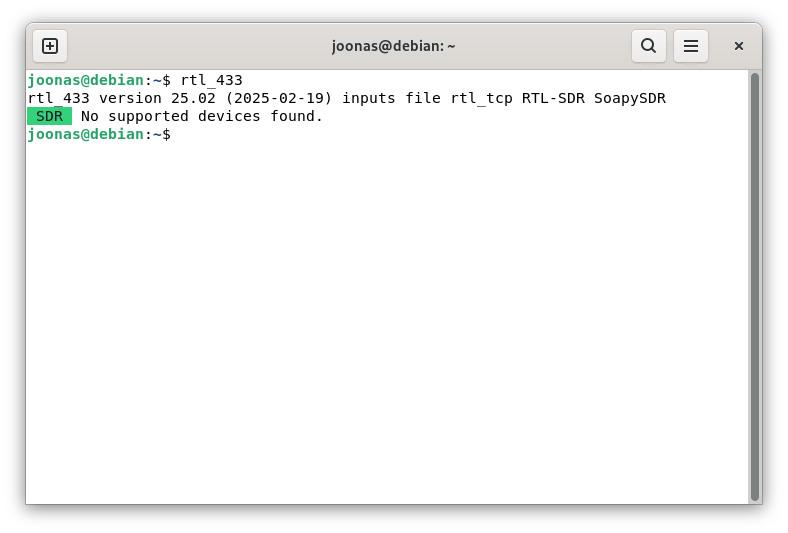
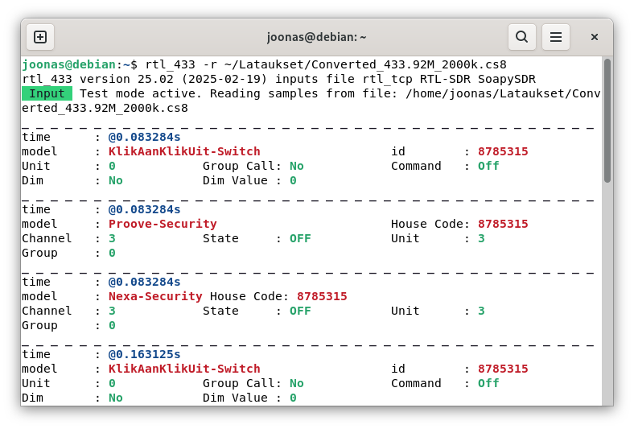
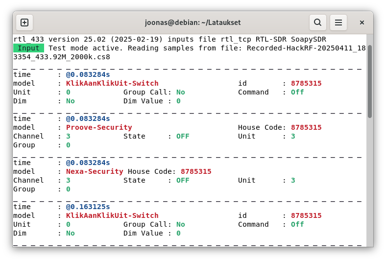
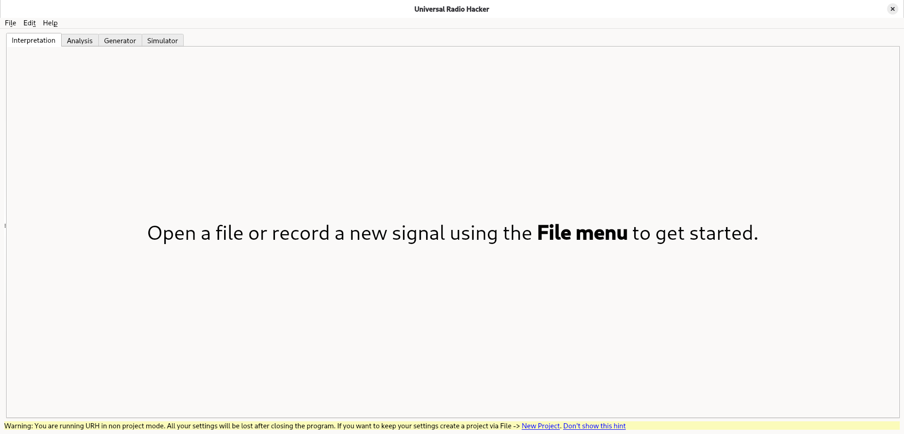

-Ensin varmistetaan Spectrum Analyzerilla, että signaalin taajuus on oikein.
-Sen jälkeen nauhoitetaan lähetystä ja tallennetaan se tiedostoksi.
-Valitaan ASK-modulaatio ja painetaan Autodetect Parameters.
-Tarkistetaan Bit Length ja säädetään tarvittaessa virhetoleranssia (Error Tolerance).
-Demoduloidaan ja tarkastellaan signaalia heksadesimaalimuodossa.
Cornelius 2022: Decode 433.92 MHz weather station data-Artikkelissa tutkitaan sääaseman lähettämää radiosignaalia.
-Signaali tunnistetaan rtl_433-ohjelmalla.
-Spectrum Analyzerilla tunnistetaan tarkka taajuus ja signaali nauhoitetaan.
-Signaali käyttää ASK-modulaation OOK-muotoa.
-Tietoa välitetään pulssien välisten taukojen pituuksilla.
-URH ei tue suoraan käytettyä koodausmenetelmää, joten Cornelius muodostaa oman dekoodausmenetelmän.
-Puretusta signaalista saadaan anturin tunniste, ja lämpötila- ja kosteustiedot.
Virtuaalikoneen tiedot:
Operating System: Debian GNU/Linux 13 (trixie)
Kernel: Linux 6.12.115+deb13.1-amd64
Architecture: x86-64
Virtualization: oracle
Hardware Model: VirtualBox
Seurasin Merbananin Git-repositorion ohjeita ja ajoin komennon sudo apt install rtl-433.
Sen jälkeen ajoin Teron ohjeiden mukaisen testin: ./rtl_433.
Aluksi sain virheen, ettei tiedostoa tai hakemistoa ole. Tarkistin missä hakemistossa olen pwd-komennolla ja sain vastaukseksi kotihakemiston. Seuraavaksi tarkistin, mihin rtl_433 on asennettu: which rtl_433 ja se löytyi /usr/bin/rtl_433-hakemistosta. Sen jälkeen kokeilin vain rtl_433 ja se toimi.

Avasin tiedoston Teron ohjeiden mukaisesti komennolla: rtl_433 -r ~/Lataukset/Converted_433.92M_2000k.cs8.
Ensimmäiseksi kiinnitin huomioita tapahtumien aikaleimoihin. Useassa eri tapahtumassa oli sama aikaleima. Yhteensä uniikkeja aikaleimoja oli 4 kappaletta, mikä viittaisi siihen, että lähetyksiä oli oikeasti 4, mutta 3 eri dekooderia onnistui tulkitsemaan ne. Tätä tulkintaa tukee myös se, että signaaleissa esiintyvissä id ja house code -kentissä oli sama arvo: 8785315
Poimin dekoodatuista signaaleista seuraavat tunnisteet:

Noudatin taas Teron ohjeita ja kirjoitin Lataukset-hakemistossa komennon: mv Recorded-HackRF-20250411_183354-433_92MHz-2MSps-2MHz.complex16s Recorded-HackRF-20250411_183354_433.92M_2000k.cs8.
Sen jälkeen kokeilin analyysiä komennolla: rtl_433 -r Recorded-HackRF-20250411_183354_433.92M_2000k.cs8 ja se vaikutti toimivan.
Kuten edellisessä tehtävässä, lähetyksiä oli 4 kappaletta ja 3 dekooderia purki ne. Dekoodatuissa house code ja id -kentissä oli jälleen sama arvo: 8785315. Myös muiden kenttien arvot näyttivät samoilta kuin edellisessä tehtävässä.

Noudatin jälleen Teron ohjeita eli ensin: sudo apt-get update.
Sitten: sudo apt-get -y install pipx.
Jonka jälkeen: pipx install urh ja pipx ensurepath.
Terminaali auki ja kiinni ja sitten: urh.
